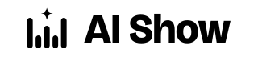
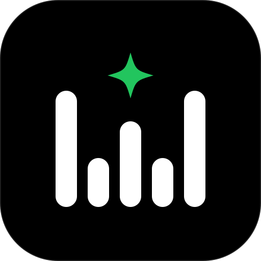

Design concept
A waveform that says W.
The mark is five rounded audio bars, the oldest shorthand for “someone is talking.” Their heights run tall, short, mid, short, tall, so the tops trace a W, the initial of Build Wiz AI. The two valleys stand for the two hosts; the centre bar is the source they meet over.
One green spark floats in the centre notch. It is the moment an idea lands — the “wiz” — and it is the only place the accent green appears in the mark.
- Built on what exists. The site’s favicon was already a five-bar waveform; the mark gives that signal a shape and a name.
- Green is a highlight, never a fill. The same rule as the site: #22C55E is used for the spark, the “AI” in the wordmark, lines and focus states.
- Outlined type. “AI Show” is set in Bricolage Grotesque ExtraBold and converted to paths, so it renders identically everywhere, with or without the font installed.
Logo variants
Seven files, one geometry.
Every variant reuses the exact path data of logo-mark.svg. Only colour, scale and the presence of the wordmark change.

logo-black.svg
logo-icon.svgUsage: the primary lockup, mark and wordmark are white-and-green and belong on black or near-black. On light backgrounds use logo-black.svg — #22C55E on #FAFAFA is only about 2.2:1 and is not legible as text. Keep clear space of at least the spark’s height (about two bar widths) around every lockup.
Colour palette
Four colours, two neutrals, strict roles.
Typography
Broadcast display, calm body.
Bob and Alice take one public article, thread or paper and pull out everything worth knowing — fact-checked against the source and credited in every episode.
Developer reference
Drop-in tokens and files.
// tailwind.config.js theme: { extend: { colors: { brand: { primary: '#000000', surface: '#0A0A0A', border: 'rgba(255,255,255,0.12)', muted: 'rgba(255,255,255,0.74)', gray: '#6B7280', // lines, large type only text: '#FFFFFF', accent: '#22C55E', paper: '#FAFAFA', }, }, fontFamily: { display: ['Bricolage Grotesque', 'Georgia', 'serif'], sans: ['Hanken Grotesk', 'Helvetica Neue', 'sans-serif'], }, } }
assets/logo/ ├── logo-mark.svg 64×64 canonical mark ├── logo-full.svg 320×72 mark + “AI Show” ├── logo-wordmark.svg 180×40 type only ├── logo-icon.svg 512×512 app / cover icon ├── favicon.svg 16×16 simplified, black tile ├── logo-white.svg 320×72 white, dark bg ├── logo-black.svg 320×72 black, light bg └── brand-showcase.html <!-- favicon --> <link rel="icon" href="favicon.svg" type="image/svg+xml">